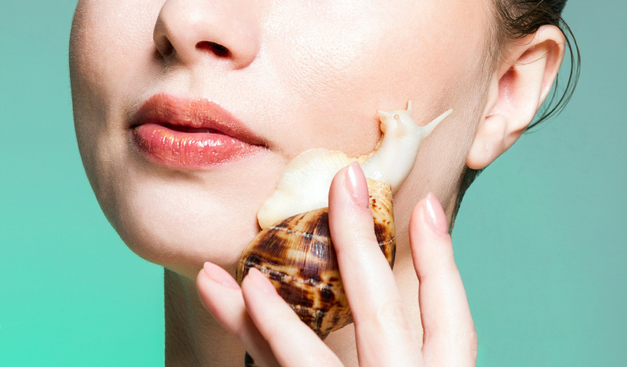

Чем полезны улитки?
Экстракт улитки в косметике
-
Слизь улиток широко используется при изготовлении косметики. В своей слизи улитки содержат
аллантоин, коллаген, витамины
-
Аллантоин – регенератор кожи и антиоксидант. Он эффективно замедляет
старение
-
Коллаген – поддерживает эластичность и упругость кожи
-
Витамины А, С, Е поддерживают здоровое состояние кожи, питают, увлажняют,
снимают
воспалительные процессы, выравнивают
и освежают цвет лица
Польза и эффект улиточного массажа
-
Защита клеток от старения, заполнение межклеточного пространства коллагеном и эластином,
предотвращение мелких морщинок
-
Слизь улиток помогает в регенерации кожи, рассасывании рубцов, выравнивает поверхность кожи
не вызывая воспаления
-
Сам массаж и сокращения мускул улитки ускоряет местную микроциркуляцию, стенки сосудов
получают дополнительный кальций, укрепляются их структура
-
Визуально скрывают линии кожных заломов

Советы по уходу
-
В качестве домика используйте террариум, или любую емкость из нетоксичного материала, с
крышкой
с вентиляционными отверстиями
-
Застелите дно домика грунтом: кокосовым субстратом, землей, мхом или сфагнумом
-
Поставьте мисочки с овощами, фруктами, кальцием
-
Поставьте купалку для улитки из нетвердых материалов,
чтобы не навредить раковине при возможном падении
-
Ежедневно опрыскивайте домик фильтрованной водой и делайте
в нем уборку. В домике должна сохраняться чистота и влажность, чтобы улитке было комфортно